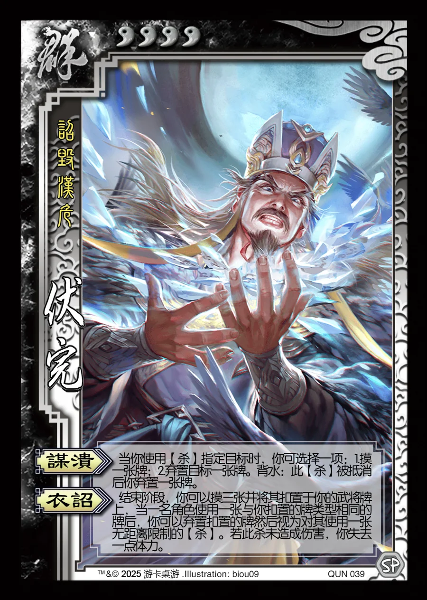

点击卡面查看大图
群
伏完
♥4诏毁汉危
谋溃
当你使用【杀】指定目标时，你可选择一项：1.摸一张牌；2.弃置目标一张牌。背水：此【杀】被抵消后你弃置一张牌。
衣诏
结束阶段，你可以摸三张并将其扣置于你的武将牌上，当一名角色使用一张与你扣置的牌类型相同的牌后，你可以弃置扣置的牌然后视为对其使用一张无距离限制的【杀】。若此杀未造成伤害，你失去一点体力。

点击卡面查看大图
诏毁汉危
当你使用【杀】指定目标时，你可选择一项：1.摸一张牌；2.弃置目标一张牌。背水：此【杀】被抵消后你弃置一张牌。
结束阶段，你可以摸三张并将其扣置于你的武将牌上，当一名角色使用一张与你扣置的牌类型相同的牌后，你可以弃置扣置的牌然后视为对其使用一张无距离限制的【杀】。若此杀未造成伤害，你失去一点体力。